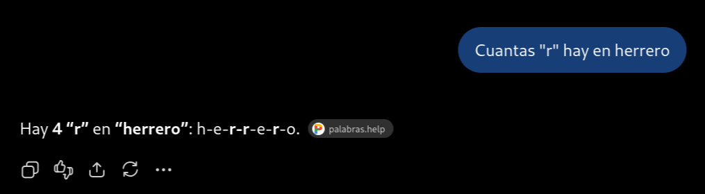

Introducción
Vives en un momento perfecto para aprender Linux.
Hasta hace poco, para aprender Linux tenías que buscarte bastante la vida con recursos externos. Hay documentación muy buena escrita durante décadas por muchos desarrolladores y usuarios de Linux en páginas. Muchos problemas comunes (y extraños) han quedado documentados en foros y solucionados con unos cuantos comandos que solo necesitas copiar y pegar en tu terminal. En otras ocasiones, simplemente preguntabas tu en alguna comunidad (foros, reddit o discord) como hacer o solucionar algo y alguien te ayudaba.
Si has seguido el curso hasta ahora, muy seguramente ya hayas solucionado más de una duda usando algún chatbot. Pero podemos mejorar el cómo haces uso de IA en tu sistema.
LLMs
Los LLM (Large Language Models) son inteligencias artificiales entrenados con enormes cantidades de texto, que pueden generar texto escrito como un humano.
Son modelos estadísticos, lo único que hacen es predecir la siguiente palabra en una secuencia de texto.
Por ejemplo, si le das la frase "El perro", el modelo podría predecir que la siguiente palabra es "caminando".
Si le das la frase "¿Cual es la capital de España?", el modelo podría predecir que la siguiente palabra es "Madrid".
El modelo, durante su entrenamiento ha visto múltiples veces la relación entre las palabras "capital", "España" y "Madrid". De forma que estadísticamente es la palabra más probable a seguir.
¿Que ocurre con algo como una operación matemática? Aquí perdemos mucha certeza en la respuesta, el modelo no puede haber visto todas las combinaciones de operaciones matemáticas.
Por eso, cosas como pedir que cuente letras en una palabra pueden generar resultados inesperados:

La imagen anterior fué generada por
GPT 5.6 Luna, el 19 de Septiembre de 2024. Es uno de los modelos más avanzados de OpenAI.
Tokens
Los tokens son las unidades básicas de texto que el modelo procesa. Cada token puede ser una palabra, una subpalabra o un carácter.
Verás medidas como tokens/segundo para indicar cuántos tokens puede procesar el modelo en un segundo.
Fine-tuning
Muchos modelos LLM pueden ser ajustados (fine-tuned) para mejorar su rendimiento en tareas específicas. Encontrarás modelos creados para tareas como clasificación de texto, generar código, responder preguntas, y más.
Estos modelos parten de un modelo pre-entrenado y se ajustan a datos específicos para mejorar su rendimiento en una tarea en particular.
Parámetros y cuantización
La capacidad de un modelo LLM se mide por su número de parámetros. Cuantos más parámetros tenga un modelo, más potente será en términos de su capacidad de entender y generar texto.
| Modelo | Arquitectura | Parámetros totales | Parámetros activos |
|---|---|---|---|
| GPT-OSS 20B | MoE | ~21B | ~4B |
| GPT-OSS 120B | MoE | ~117B | ~5B |
| Qwen3-32B | Dense | 32B | 32B |
| Qwen3-235B-A22B | MoE | 235B | 22B |
| Llama 4 Scout | MoE | 109B | 17B |
| Llama 4 Maverick | MoE | 400B | 17B |
| DeepSeek-V3.1 | MoE | 671B | 37B |
| Llama 3.3 70B | Dense | 70B | 70B |
Los modelos MoE (Mixture of Experts) son aquellos que tienen varios bloques especializados llamados expertos, y un router decide qué expertos activar en función de la entrada.
Los modelos Dense son aquellos que tienen una única capa oculta que procesa toda la entrada.
Muchos modelos son cuantizados (quantized) para reducir su tamaño y mejorar su rendimiento en hardware más limitado.
Local vs Nube
Los modelos pueden ser ejecutados localmente en tu equipo o en la nube.
Utilizar un modelo de IA es una tarea computacionalmente intensiva, generalmente requiere de una GPU muy potente y una cantidad significativa de memoria RAM. Por eso es común que la mayoría de usuarios ejecuten modelos de IA en la nube, donde un datacenter proporciona los recursos necesarios para ejecutar modelos a una velocidad considerable.
Pero los modelos locales avanzan mucho en sus capacidades, permitiendo ejecutarlos en hardware más limitado y con menor costo:
El ejemplo anterior ha sido generado en un Thinkpad T440p de 2014, con una GPU integrada, 16GB de RAM y un procesador Intel Core i5.
El modelo usado ha sido
qwen2.5-0.5b-instruct, tiene 0.5 billones de parámetros,q5_K_Msignifica que se ha cuantizado a 5 bits, lo que reduce su tamaño y mejora su rendimiento en hardware más limitado.
Ejecutar un modelo localmente tiene muchas ventajas:
- No dependes de internet, puedes ejecutar el modelo sin necesidad de una conexión a la red.
- Rápido, los modelos locales suelen ejecutarse mucho más rápido que en la nube si tu hardware es adecuado. Evitas la latencia de red y tener que enviar, esperar el procesado y recibir el resultado.
- Costo, un modelo local es gratis, no necesitas pagar por su ejecución.
- Privacidad, los datos no salen de tu equipo, no necesitas compartir información con terceros.
Chatbot vs Agente
La mayoria de usuarios han interactuado con chatbots, son aplicaciones que responden a preguntas y pueden ejecutar algunas tareas.
Los agentes son aplicaciones más avanzadas que pueden tomar decisiones y ejecutar tareas interactuando con el usuario y el propio sistema en el que se ejecutan.
LLMs y Linux
Hemos hablado sobre cómo los LLM tienen como principal fuente de entrenamiento texto, y que lo que saben es basado en el, además, su salida también es texto.
Desde que empezaste a usar Linux, la principal fuente de interacción con el sistema ha sido a través de una terminal, ¿y que tipo de datos entiende una terminal? Texto.
No solo eso, has comprobado como la mayoría de configuraciones en linux y datos del sistema son archivos de texto.
Un LLM va a poder entender e interactuar mucho más con un sistema cuya fuente de datos principal es texto, interactuar con interfaces gráficas es posible, pero es una tarea mucho más compleja para un modelo de lenguaje.
Además, al contrario que otros sistemas operativos, Linux es open source, su código fuente es público, y muchos modelos han sido entrenados con este código como otra fuente de datos más. Entienden muy bien como funciona.